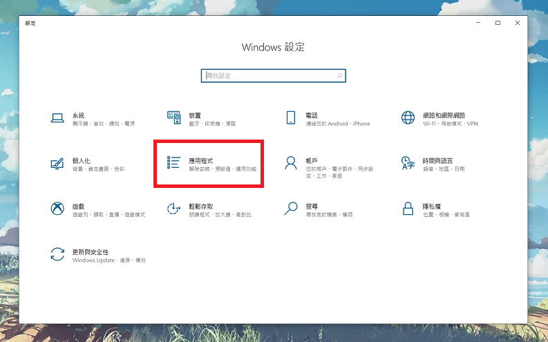

在Windows 10架設SFTP(SSH Server)
2020-07-31
最近因為工作需求，要在Windows系統上架設安裝SFTP(SSH File Transfer Protocol)Server，所以在此記錄一下怎麼架設與設定，以免忘記之餘也順便分享給有需要的朋友們。
前言
SFTP全名為SSH File Transfer Protocol，中文翻譯「安全檔案傳送協定」，是一種資料流連線，提供檔案存取、傳輸和管理功能的網路傳輸協定。由網際網路工程任務組（IETF）設計，透過SSH 2.0 的擴充提供安全檔案傳輸能力[註]。 因為多了這種安全協定的認證，所以SFTP在傳輸上效率比FTP低，但很適用於需要高安全性傳輸上。
在Windows 10裡，官方已經推出內建擴充的應用方式「OpenSSH」所以接下來將會使用這套來做SSH Server的架設。
安裝OpenSSH
- 進入Windows 設定
-
進入應用程式

- 選用功能
- 新增功能
- OpenSSH 伺服器(點選安裝)
- 返回上一頁(等待安裝完畢)
- 安裝完成後請重新啟動電腦(重開機)。
啟動服務
- 以系統管理員身分啟動PowerShell。
-
啟動「OpenSSH SSH Server」服務，在終端機輸入指令：
Start-Service sshd -
將「OpenSSH SSH Server」服務設為自動啟用(建議但非必要)，在終端機輸入指令：
Set-Service -Name sshd -StartupType 'Automatic' -
確認當前防火牆規則，指令如下：
Get-NetFirewallRule -Name *ssh* -
新建立防火牆規則指令如下：
New-NetFirewallRule -Name sshd -DisplayName 'OpenSSH Server (sshd)' -Enabled True -Direction Inbound -Protocol TCP -Action Allow -LocalPort 22
這樣Server就啟動完成了，現在測試看看。
測試
開啟命令提示字元，在內輸入：
ssh username@servername username：電腦使用者帳號，servername：電腦IP
連線時會要你輸入密碼，密碼為電腦使用者的密碼，輸入時會沒有任何反應是正常的，為了保密。
第一次連線到伺服器時，應該會看到類似下列的訊息：
The authenticity of host 'servername (10.00.00.001)' can't be established.
ECDSA key fingerprint is SHA256:(<a large string>).
Are you sure you want to continue connecting (yes/no)?這邊輸入yes
由於這我ftpUser這使用者有設定讀取權限，所以我用另外一組連線，取得成功畫面供參考，
連線成功後會看到類似下方的標頭，這時候就可以輸入dir去觀看路徑內的檔案了。
domain\username@SERVERNAME C:\Users\username>大功告成囉~
總結
在Windows 10裡已經內建OpenSSH擴充服務，不用在像之前依靠第三方軟體去設定，在安裝的過程也沒遭遇到太多問題跟困難，因為官方就有設定文件了，個人覺得快速便利，如果有需要的朋友可以參考，也請各前輩可以留言討論更好的方法來跟大家一起分享。
下篇會來講怎麼設定使用者對於檔案(路徑)的權限管理。